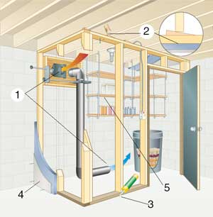

Len Churchhill
The two vents (#1 in the illustration above) create a siphon effect that lets you regulate the flow of cold outside air into the insulated cellar room, allowing the temperature to remain near freezing through the winter months. As you custom-cut your wall studs to length, make them short enough to leave an eighth- to a quarter-inch gap between the top of the wall and the joists above when combined with the top and bottom plates (#2). Basement floors are often damp, so consider using composite deck material instead of wood for the bottom wall plate (#3). Insulation is your next challenge, and good reasons exist to consider using rigid sheets of foam (#4) instead of traditional fiberglass batts. The most important is moisture resistance.